Test Result Viewer 使用說明¶
這份文件提供一般使用者快速上手 Test Result Viewer。
這是什麼¶
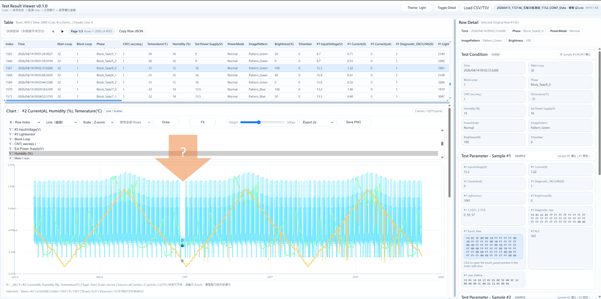
Test Result Viewer 的主程式，可直接用瀏覽器開啟，用來讀取測試紀錄檔，並提供：
- 表格檢視
- 關鍵字搜尋
- 單筆資料詳情
- 圖表繪製
- Touch Panel 座標預覽
不需要安裝程式，也不需要開發環境，其目的是根據當前 TestResult data 藉由視覺化的方式快速確認監控過程的異常之處。
如何開啟¶
- 在電腦上找到
ReportViewer.html - 用瀏覽器開啟
- 畫面上方點
Load CSV/TSV - 選擇要查看的檔案
基本操作¶
1. 載入檔案¶
- 支援
.csv、.tsv、.txt、.log、.data - 載入後左邊會出現表格
- 右邊會顯示選取列的詳細資訊
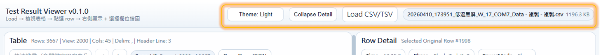
2. 搜尋資料¶
- 在左上方搜尋框輸入關鍵字
- 可輸入多個關鍵字，中間用空白分開
- 表格會即時篩選
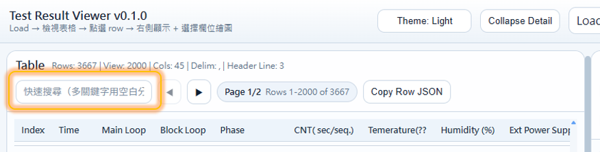
3. 切換頁面¶
- 用
◀/▶切換頁面 - 中間的頁碼會顯示目前頁數與資料範圍
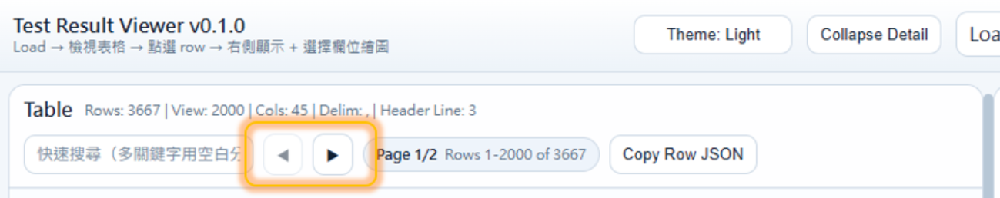
4. 查看單筆資料¶
- 在左側表格點任一列
- 右側會顯示該列的詳細欄位內容
- 內容會自動分成：
Test ConditionTest Parameter - Sample #1Test Parameter - Sample #2Test Parameter - Sample #3
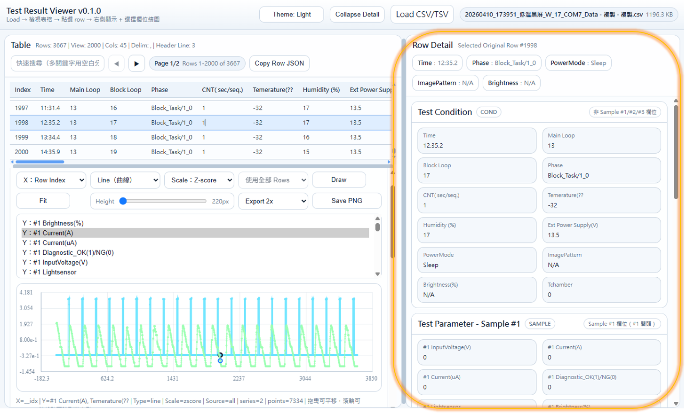
5. 複製目前資料¶
- 點
Copy Row JSON - 可複製目前選取列的完整 JSON 內容
Chart 圖表功能¶
下方 Chart 區塊可以把欄位畫成圖。
如何使用¶
- 選擇
X欄位 - 選擇一個或多個
Y欄位 - 按
Draw
可調整項目¶
Line / ScatterScaleRawNormalizeZ-scoreLog10HeightExport 1x / 2x / 3x
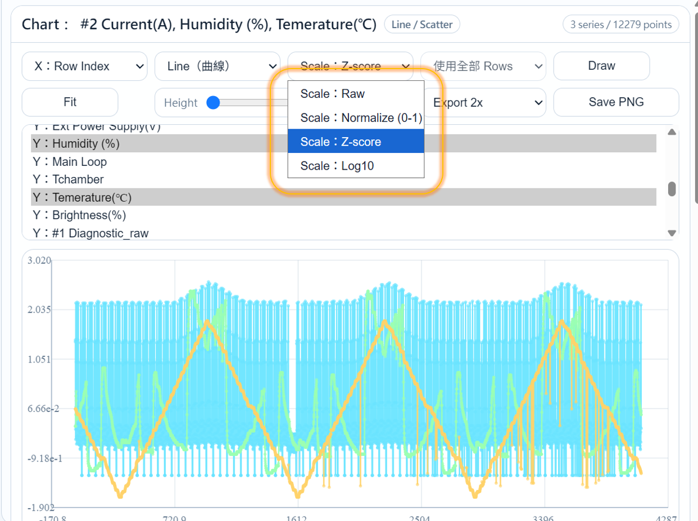
圖表互動¶
- 滑鼠拖曳：平移圖表
- 滾輪：縮放圖表
Fit：重新自動縮放Save PNG：匯出圖片- 雙擊圖上的點：跳到對應的資料列
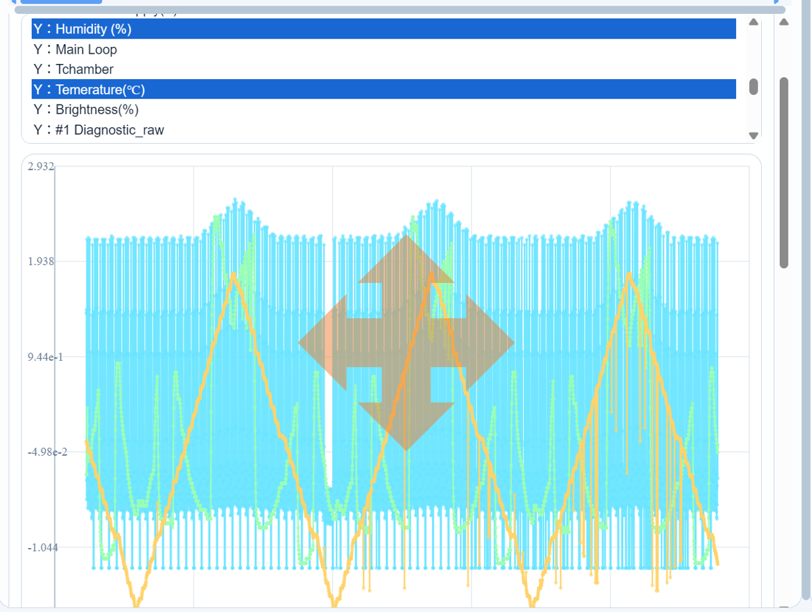
Touch Panel 功能¶
Touch Config¶
可以設定：
Panel XPanel Y
設定後按 Apply Panel，會更新左側 Touch Panel 的顯示範圍。
也可以使用 Import Config 匯入 JSON 設定檔。
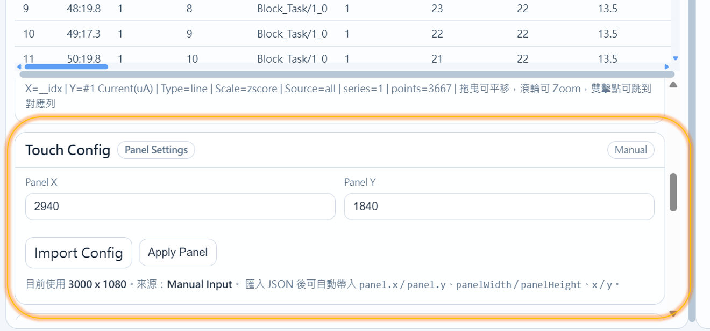
Touch Panel 預覽¶
左側下方 Touch Panel 可顯示觸控座標。
目前支援從右側 detail 點擊以下欄位：
Touch_RawTouch ID_ XYS1_Touch ID_ XYS2_Touch ID_ XYS3_Touch ID_ XY
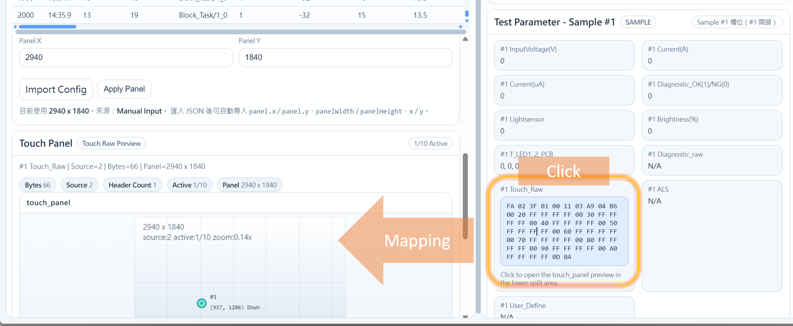
可支援的資料格式¶
1. Touch_Raw¶
例如：
FA 01 3F 02 00 11 03 FE 02 67 ...
2. Touch ID_ XY¶
例如：
123,456
(123,456)
123 456
X=123 Y=456
畫面調整¶
左右 panel 寬度¶
- 中間的直線可以左右拖曳
- 可調整左側表格與右側 detail 的寬度
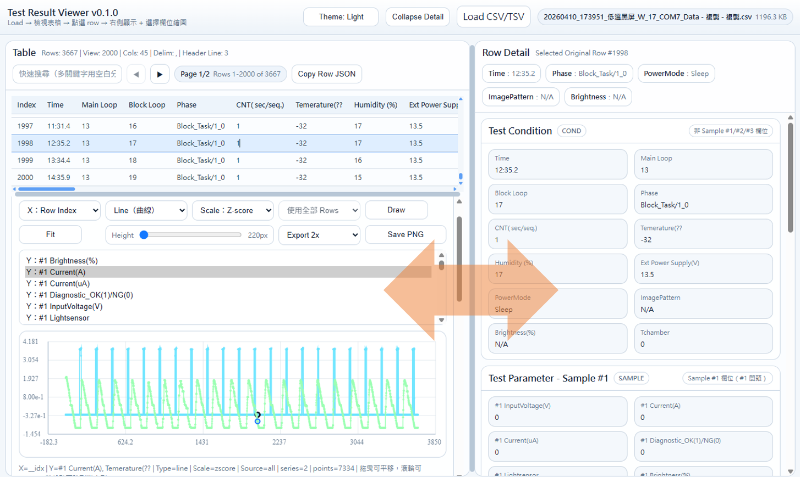
上下 split 區塊高度¶
- Table 與下方區塊中間有一條 splitter line
- 可以上下拖曳，調整：
- 上方 table 區
- 下方 Chart / Touch Config / Touch Panel 區
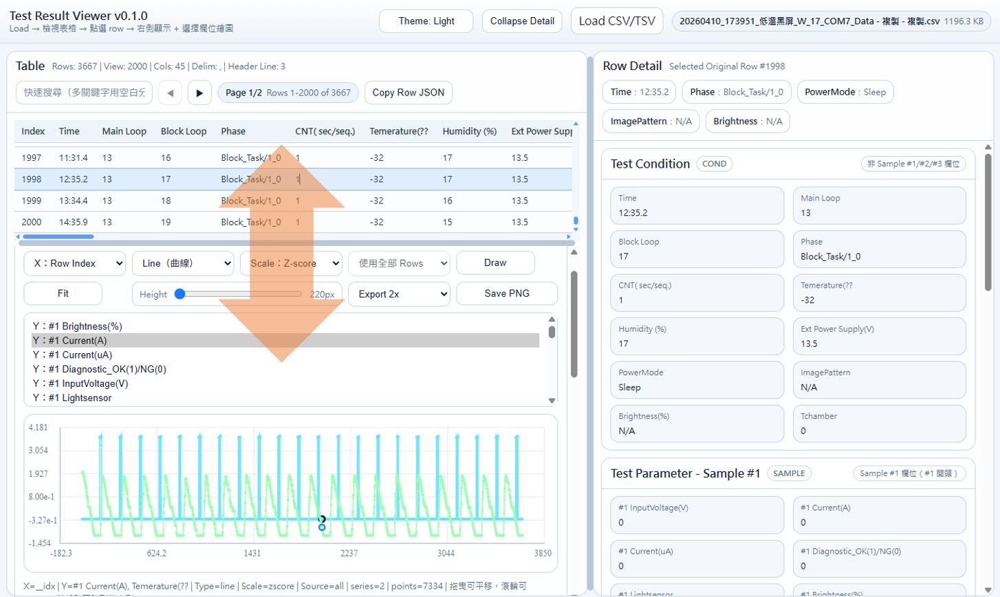
Theme¶
- 右上角可切換
Theme: Dark / Light
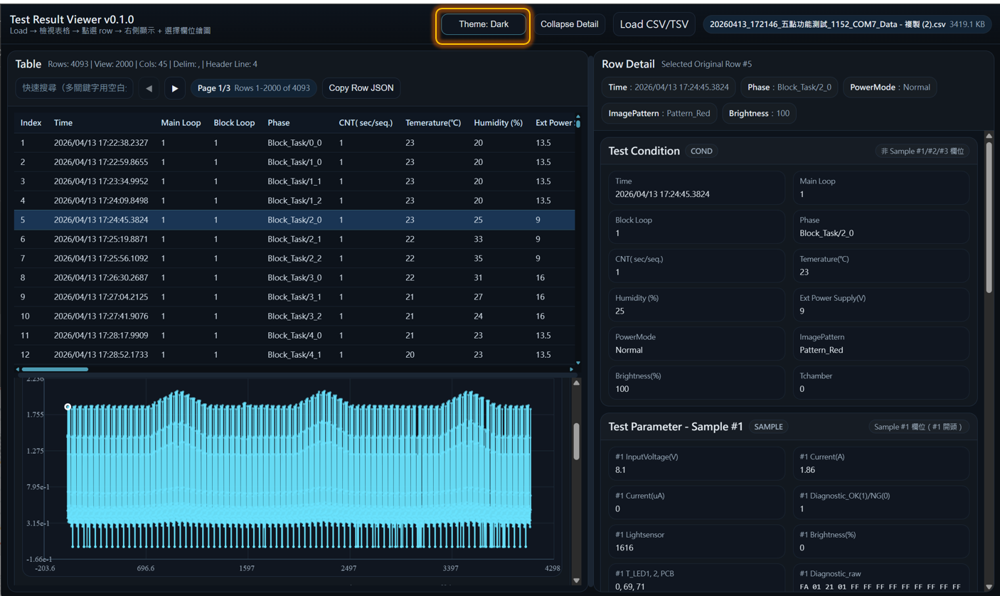
收合右側詳情¶
- 點
Toggle Detail - 可暫時收合右側 detail，讓左側空間更大
常見問題¶
1. 載入後沒有看到資料¶
請確認：
- 檔案格式正確
- 檔案內有 header
- 檔案不是空的
2. Panel X / Panel Y 改了但畫面沒變¶
請確認：
- 是否有按
Apply Panel - 是否已點選某個
Touch_Raw或Touch ID_ XY欄位
3. 點 Touch_Raw 沒有畫面¶
可能原因：
- 該欄位內容不是有效的 raw frame
- 資料格式不完整
4. 點 Touch ID_ XY 沒有畫面¶
可能原因：
- 欄位內容不是可辨識的座標格式
- 座標字串格式不在支援範圍內
5. Chart 沒有畫出來¶
請確認：
- 是否有選擇
Y欄位 - 該欄位是否為數字資料
- 該欄位內容是否可被轉成數值
建議使用流程¶
- 開啟
ReportViewer.html - 載入 CSV/TSV 檔
- 在左側搜尋與選取資料
- 在右側查看詳細欄位
- 需要時：
- 用
Chart畫圖 - 用
Touch Config調整 panel 大小 - 點
Touch_Raw或Touch ID_ XY看觸控位置